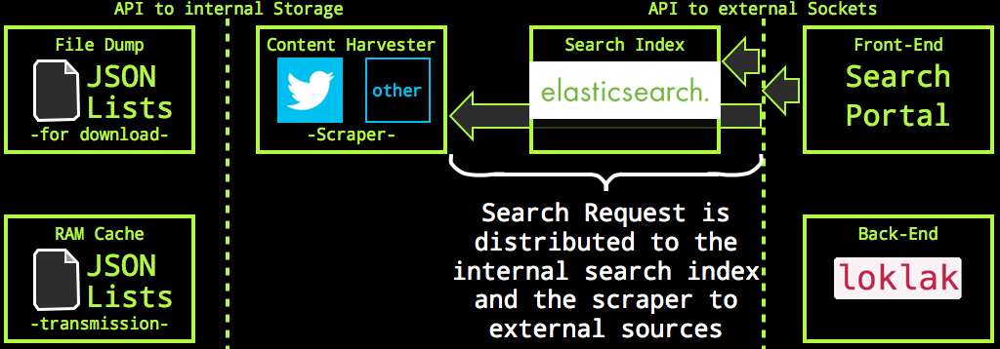
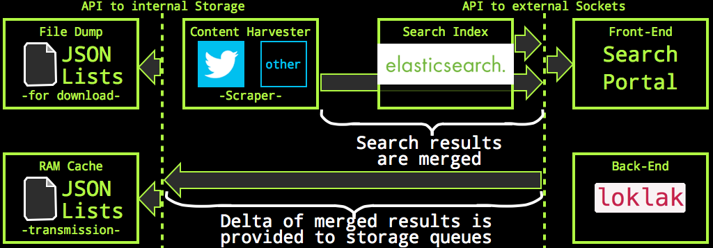
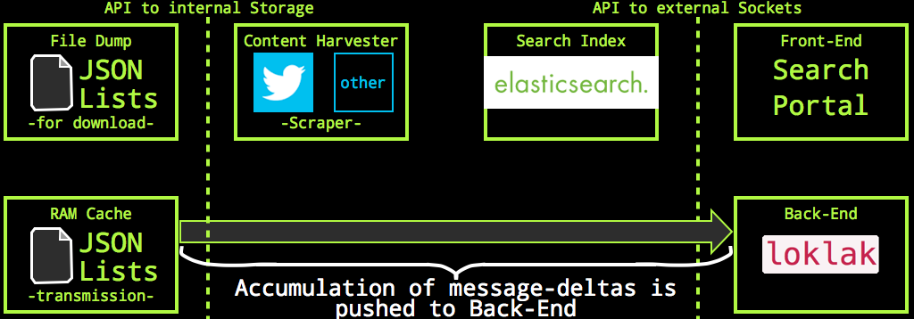

loklak Architectureloklak is a java application which runs a jetty web server for the html interface and an Elasticsearch search server. The application contains a self-documentation which consists of the web pages you are looking at right now. There is also a javadoc.
The file structure follows a default java application folder naming:
There is only one public port available, port 9100. loklak opens two more ports for Elasticsearch, port 9200 (Elasticsearch HTML api) and 9300 (Elasticsearch Transport API) but they are configured to be unavailable for clients from non-localhost sockets. You can change the port numbers and access rules in conf/config.properties. If you want to run several loklak instances on the same host, you must change three port number (i.e. by increasing all by one).
Search results are combined from the internal Elasticsearch index and external sources such as Twitter. To retrieve the Twitter search results, a web page scraper is used to circumvent the forced OAuth identification of the search users. The search process has three phases:
This happens when the search.json api is called: the api servlet concurrently queries a Twitter scraper and the internal Elasticsearch index:
This happens when the search.json api is called: the api servlet concurrently queries a Twitter scraper and the internal Elasticsearch index:
As a part of this process, the Twitter scraper also de-shortens all links embedded in all Tweets from the search result.
The search result is merged into one message list. Merging is easily done because all messages have an identifier and the messages are simply ordered by their date:
As part of the merge process, all new, previously unknown messages can be identified. These are pushed on a storage list for future processing.
An independent caretaker-process runs every three seconds and looks how many new messages had been placed on the storage queue; if the number exceedes a given limit (i.e. 100) then all messages are stored to the own file system and pushed over the back-end API to the back-end peer.
Files pushed on the latest message file stack can be downloaded immediately. The same happens at the back-end peer: new messages appear immediately there as well.
The topology of the loklak depends only on you: using the back-end configuration, you can chain
peers and data from scraped content flows along the network chain until it reaches a back-end, which has no other back-end.
If you install loklak, you may keep the assigned back-end peer (see config.properties: backend property),
or assign another one. If you tell people about loklak, tell them to assign your peer as backend.
Your peer will get all Tweets from those new peers, and it will dispatch them also to your back-end.
If your peer cannot access Twitter.com or you don't want to load Tweets yourself, you can assign a 'front-peer' to do that for your (see config.properties: frontpeers). You can also assign several peers (which will be used round-robin) and even peers which have no back-end themself (maybe your own swarm of scrapers).
The message dumps mentioned above are lists of JSON terms. loklak creates a new dump file for every month, but only if loklak is (re-)started. The dump file gets appended with a JSON term whenever a new message appears and is indexed. That means that the dump file itself is not JSON because there is missing a list bracket at the start and the end and commas in between. Every line in the file is an individual JSON term which makes it possible to grep over the file. Whenever a new file is opened, the old one is gzipped automatically.
A dump file looks like (these are four lines):
{"created_at":"2015-03-06T19:47:05.000Z","screen_name":"KohlerSolutions","text":"There will be a very interesting #Mozilla track at #FOSSASIA in Singapore: http://fossasia.org/track/FOSSASIA-Mozilla.pdf","link":"https://twitter.com/KohlerSolutions/status/573932833573568512","id_str":"573932833573568512","source_type":"TWITTER","provider_type":"SCRAPED","retweet_count":3,"favourites_count":2,"user":{"name":"Michael Kohler","screen_name":"KohlerSolutions","profile_image_url_https":"https://pbs.twimg.com/profile_images/554282692489924608/wPVGA62a_bigger.jpeg","appearance_first":"2015-03-07T11:00:45.798Z","appearance_latest":"2015-03-07T11:00:45.798Z"}}
{"created_at":"2015-03-07T05:51:10.000Z","screen_name":"bytebot","text":"Will you be @fossasia ? I9m excited to give a keynote about @mariadb there! http://fossasia.org/","link":"https://twitter.com/bytebot/status/574084855664783361","id_str":"574084855664783361","source_type":"TWITTER","provider_type":"SCRAPED","retweet_count":1,"favourites_count":1,"user":{"name":"Colin Charles","screen_name":"bytebot","profile_image_url_https":"https://pbs.twimg.com/profile_images/490878058648178688/TtpjnwOx_bigger.jpeg","appearance_first":"2015-03-07T11:02:07.754Z","appearance_latest":"2015-03-07T11:02:07.754Z"}}
{"created_at":"2015-03-07T05:49:11.000Z","screen_name":"utianayuba","text":"di @fossasia akan bicara @tuanpembual dari @GLiBogor, @syaimif dari @BlankOnLinux, @emily_chen dari @gnome_asia.","link":"https://twitter.com/utianayuba/status/574084356295159808","id_str":"574084356295159808","source_type":"TWITTER","provider_type":"SCRAPED","retweet_count":3,"favourites_count":1,"user":{"name":"Utian Ayuba","screen_name":"utianayuba","profile_image_url_https":"https://pbs.twimg.com/profile_images/538635188478029825/RtgStA6W_bigger.jpeg","appearance_first":"2015-03-07T11:02:07.758Z","appearance_latest":"2015-03-07T11:02:07.758Z"}}
{"created_at":"2015-03-07T03:31:47.000Z","screen_name":"comprock","text":"I9ve been presenting and working with http://fossasia.org/","link":"https://twitter.com/comprock/status/574049779975655424","id_str":"574049779975655424","source_type":"TWITTER","provider_type":"SCRAPED","retweet_count":1,"favourites_count":0,"user":{"name":"Michael Cannon","screen_name":"comprock","profile_image_url_https":"https://pbs.twimg.com/profile_images/574054683079090176/3-XSsyEh_bigger.jpeg","appearance_first":"2015-03-07T11:02:07.842Z","appearance_latest":"2015-03-07T11:02:07.842Z"}}
These dump files can easily filtered with standard shell script tools - like grep - to produce new input dump files to be imported in new/different loklak instances.
There are no user accounts in loklak and you cannot configure some. There is an exception with the embedded Elasticsearch instance, please refer to the documentation of that library.
Access restrictions are done by distinguishing accesses frow localhost and from other hosts. While requests to servlets from localhost clients do not have any restrictions, external client accesses may have restrictions. Restricted are i.e. a large depth number for the crawl start and excessive requests to the html interface.